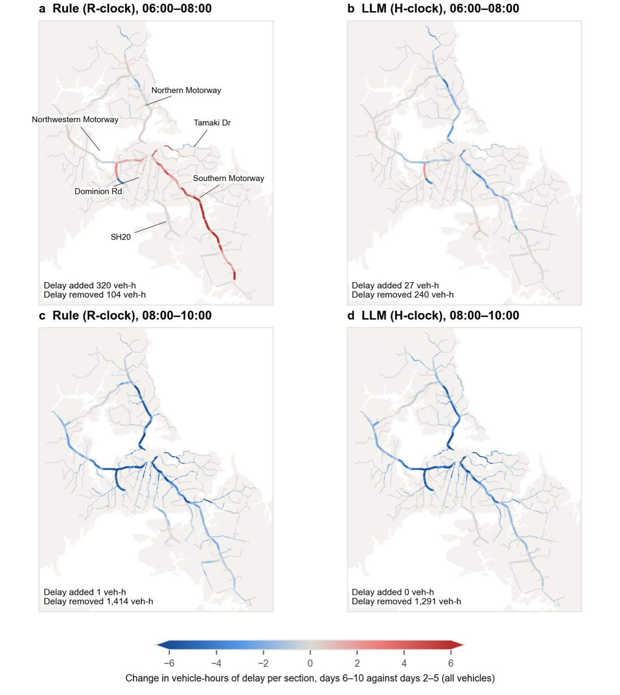
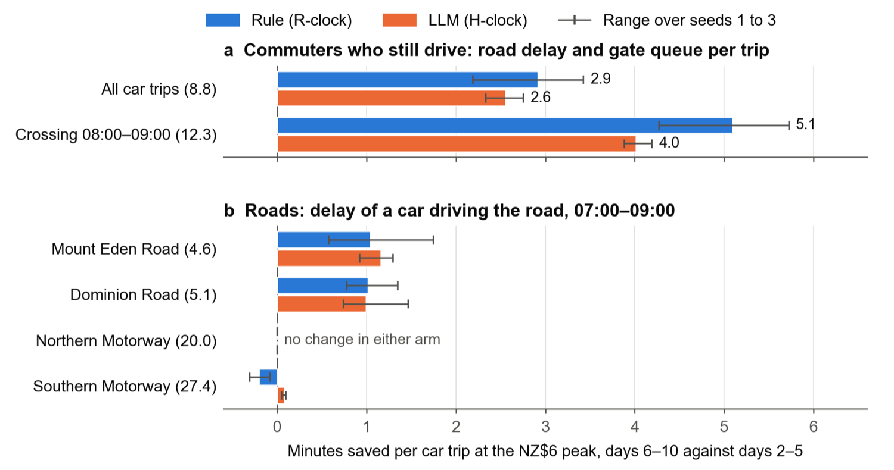

A third of the cars vanished. Where did they go?
Here is what the charge did, told twice: once with the formula deciding for every commuter, once with the AI. The charts are computed live from the simulation files; the maps are from the study.
The rush hour moved, or it shrank
Before the charge, both versions of the city look the same. After it, they diverge. The formula-driven commuters dodge the NZ$6 hour by leaving earlier: between 6:30 and 7:30 there are about a third more cars than before, a brand-new mini rush hour. The AI-driven commuters don't bother retiming; they leave the car at home, so the roads get quieter at every hour. In the charged hour itself, both remove about the same number of cars, and the drivers who remain save two to seven minutes per trip.
More or fewer cars than before the charge, and longer or shorter delays
Each bar compares the charged mornings (6 to 10) with the free mornings (2 to 5) at the same time of day. Above zero: more cars or more delay than before. Below: fewer.
Who gave up the car, and who just left earlier
How people travelled on the last free morning and the last charged one
When the remaining drivers leave home
Share of car trips by departure time. Dashed is the last free morning, solid the last charged one. Watch the blue curve slide left.
Which kinds of people changed the most?
Fall in car trips after the charge, for different groups of commuters. Hover for the exact numbers; the count in brackets is how many commuters are in the group.
Which roads got better, and which got worse
Fewer cars means less delay for everyone on the road, including the trucks, school runs and other trips the model keeps constant. After 8 am nearly every road improves in both versions. Before 8 am, the formula's early birds make things worse on the Southern Motorway and the inner approaches: 320 extra vehicle-hours of delay each morning on those roads. The AI version barely touches the early roads. Over the whole morning the charge saves the region 1,200 to 1,500 vehicle-hours, about 5% of all delay. Why so little? Commuters are only 13% of the traffic, and the motorways jam anyway.


The morning the trains broke down
In a second scenario, buses and trains on the busiest side of town take twice as long on two mornings: one before the charge, one after it. Everyone is told in advance. The formula-driven riders mostly shrug and sit through the slow trip. The AI-driven riders are far more active: before the charge, many drive or work from home instead. After the charge, something interesting happens. When the AI moved people to the bus on the charge morning, most of them said “if the bus is disrupted, I'll drive”. On the disrupted morning that back-up plan kicks in without any new decision, and most of the former drivers are back in their cars for a day, charge or no charge. Nobody programmed that behaviour; it came from the AI's answers.
What the affected riders did on the two disrupted mornings
People on the South-west side who rode the bus or train the morning before. Below each chart: how many were back on the bus the next day. (The study counts riders by their standing routine, so its numbers differ by a few people.)
In the AI's own words
Every time the AI decided for someone, it gave a reason. The reasons line up with the facts it was given, but its tastes are its own: it is quicker to give up the car for the bus than the formula, and it almost never retimes (“leaving earlier to save a couple of dollars isn't worth the hassle”). That's why the two results are best read as two plausible futures, not a forecast. Browse the 771 answers below.